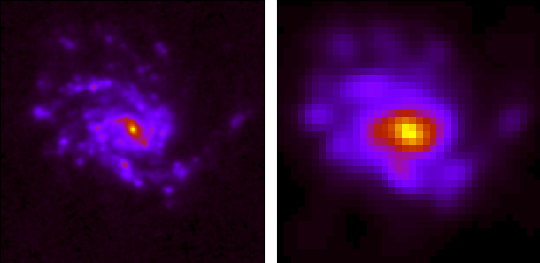
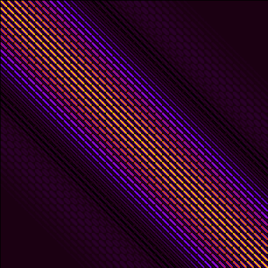
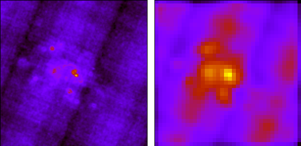
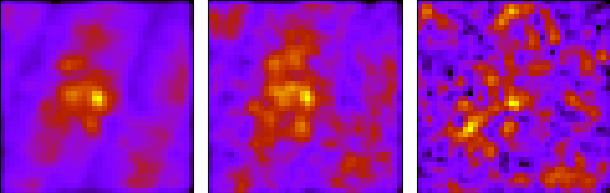

Idea
Let \(\boldsymbol{x} \in \mathbb{R}^{n}\) be a random vector with mean
\(\boldsymbol{\mu_{x}}\) and covariance matrix
\(\boldsymbol{\Sigma_{x}} \) and let \(f: \mathbb{R}^{n} \rightarrow
\mathbb{R}^{m}\) be a nonlinear function. Up to first-order
approximation, \(\boldsymbol{y}= f(\boldsymbol{x}) \approx
f(\boldsymbol{\mu_{x}}) + J(\boldsymbol{x- \mu_{x}})\), where \(J \in
\mathbb{R}^{m \times n}\) is the Jacobian matrix \(\partial f/\partial
\boldsymbol{x}\) evaluated at \(\boldsymbol{\mu_{x}}\). This
approximation is reasonably accepted\(^{*}\) and the random vector
\(\boldsymbol{y} \in \mathbb{R}^{m}\) has mean \(\boldsymbol{\mu_{y}}
\approx f(\boldsymbol{\mu_{x}})\) and covariance \(\Sigma_{y} \approx J
\Sigma_{x} J^{T}\).
For example, if \(\boldsymbol{x}\) is
composed of two random vectors \(\boldsymbol{a}\) and
\(\boldsymbol{b}\) such that \(\boldsymbol{x}=( \boldsymbol{a},
\boldsymbol{b})\), then
\(\Sigma_{y} = \begin{bmatrix} J_{\boldsymbol{a}} &
J_{\boldsymbol{b}} \end{bmatrix} \begin{bmatrix}
\sigma_{\boldsymbol{a}} & \sigma_{\boldsymbol{ab}} \\
\sigma_{\boldsymbol{ba}} & \sigma_{\boldsymbol{b}}
\end{bmatrix} \begin{bmatrix} J_{\boldsymbol{a}}^{T} \\
J_\boldsymbol{b}^{T} \end{bmatrix} + O(N^2) \)
(1)
where \(J_{\boldsymbol{a}}=\partial\boldsymbol{y}/\partial
\boldsymbol{a}\) and \(J_{\boldsymbol{b}}=\partial\boldsymbol{y}/
\partial \boldsymbol{b} \).
It can be seen that the uncertainty, characterized by the covariance
matrix, \( \Sigma_{\boldsymbol{x}} \), of the input data
\(\boldsymbol{x}\), is propagated to first degree by the Jacobian,
\(J\), through the operation, \( f \).
Method
Automatic differentiation relies on the fact that every operation, as
complex as it gets, boils down to a sequence of elementary arithmetic
operations and functions. And therefore, by tracking the chain of
operations for every input data from beginning to end, one could in
principle apply the chain rule repeatedly and compute partial
derivatives automatically.
Implementation
Write about software ..
Example
We'll illustrate our idea with an application from multi-wavelength
astronomy, where we are interested in comparing images of the same
physical space taken from different instruments with different
resolutions. One would need to degrade the images to a minimum common
resolution and re-project to a common grid; by this, changing the pixel
size, orientation, while preserving the colors of the astronomical
source. This task involves applying a chain of convolution operations
in the pixel space with specially constructed non-Gaussian kernels\(^{**
}\) depending on the ratio of the final and initial pixel size and
resolution.
Let \( \boldsymbol{x} \in \mathbb{R}^{n\times m} \), be a regularly
gridded image of dimensions \( n\times m \) with covariance matrix \(
\Sigma_{\boldsymbol{x}} \). And let, \( y \in \mathbb{R}^{n'\times m'}
\), be the result image of dimensions \( n'\times m' \) with \( n' \leq
n \) and \( m' \leq m \), where \( \boldsymbol{y} = h( \boldsymbol{x})
= ( g \circ f)(\boldsymbol{x}) \), with \(f\) and \(g\) the degrading
and re-gridding operation respectively.
|

On the left: the original \(90\times 90\) image of NGC4254 as
seen by the instrument PACS on-board of the Herschel space
telescope at a wavelength of 70 \(\mu\)m and pixel size of 2
arcseconds. On the right: degrading and re-gridding to the
resolution of the SPIRE instrument on-board of the Herschel
space telescope at a wavelength of 250 \(\mu \)m and pixel size
of 6 arcseconds resulting in a \( 33 \times 33\) image.
|
The Jacobian of \(h\) at \( \boldsymbol {x}\), \( J_{h}(\boldsymbol{x})
\in \mathbb{R}^{n'\times m' \times n \times m}\), where every element
\(J_{i'j'}\) with \(1\leq i'\leq n'\) and \(1\leq j'\leq m'\), is an
\(n\times m\) matrix containing the first derivatives of \(
\boldsymbol{y} \) with respect to the pixel \(\boldsymbol{x}_{ij} \)
with \(1\leq i\leq n \) and \(1\leq j\leq m\). In total, the Jacobian
will contain \(n'\times m' \times n \times m\) first derivatives of the
every pixel of the final image, \(y_{i'j'}\), with respect to the input
image, \(\boldsymbol{x}\).
|

Visualization of the Jacobian, \(J_{h}(\boldsymbol{x})\).
Every element, \(J_{i'j'}\), shows the derivative of \(
y_{i'j'}\), with respect to \(\boldsymbol{x}\). Therefore
showing the dependence of every pixel of \(\boldsymbol{y}\)
on \(\boldsymbol{x}\).
|
As stated above, the Jacobian, \(J_{h}(\boldsymbol{x})\in
\mathbb{R}^{n'\times m'\times n\times m}\), is a \(n'\times m'\) matrix
(here \(33\times 33\)) where every element is a \(n\times m\) matrix
(here \(90\times 90\)) containing the derivative of \(y_{i'j'}\) with
respect to \(\boldsymbol{x}\). Every pixel \(J_{i'j'}\) shows the
dependence of \(y_{i'j'}\) to \(\boldsymbol{x}\). In order to estimate
the uncertainty of the final image, \( \Sigma_{\boldsymbol{y}} \), one
would then have to make use of equation \((1)\) to propagate the
uncertainty, \( \Sigma_{\boldsymbol{ x}} \), of the initial
image.
|

On the left: the uncertainty on the pixels of the initial
image \( \boldsymbol{x} \). On the right: the propagated
uncertainty of \(\boldsymbol{y}\).
|
There exists other techniques, often used in astronomy, to estimate the
propagated uncertainty through complex non-linear operations. It is
possible to derive analytical solutions for the propagated uncertainty,
under various statistical choices and approximations. Klein
(2021)\(^{***}\) presented an analytical approximation to estimate
the propagated uncertainty when convolving an image with a Gaussian
kernel for both correlated and uncorrelated data. The result states that
the propagated uncertainty of uncorrelated data, i.e where \(
\Sigma_{\boldsymbol{x}}\) is diagonal, is calculated by convolving the
initial uncertainty with the square of the kernel.
\(\Sigma_{\boldsymbol{y}} = \Sigma_{\boldsymbol{x}}\star K^{2}\)
Where \(\star\) is the convolution operator and \(K\) is
a 2D normalized Gaussian kernel. In the following, we compare this
method to the
differr method applied to the resolution
degradation step for the same example as before. We find that the two
methods yield similar results up to 0.1% in mean absolute percentage
error over the whole image.
|
On the left: the propagated uncertainty as estimated by
the differr method. On the right: the propagated
uncertainty as estimated by the method explained in
Klein (2021).
|
A more applicable method, is to estimate the propagated uncertainty by
repeating the same process and by adding a random noise to each pixel
from a Gaussian distribution with a standard deviation equal to the
uncertainty associated with each pixel. With enough repetition, one can
estimate the propagated uncertainty of each output pixel by the
standard deviation of its values over all iterations. This method,
known as bootstrapping or Monte-Carlo, can be shown to be equivalent to
equation \((1)\), and therefore converges after enough iterations to
the
differr method.
|

MC propagated error after 10, 100, and 500 iterations
|
\(^{*}\) If \(f\) is approximately affine in the region about the mean
of the distribution
\(^{**}\) Aniano, G., Draine, B. T., Gordon, K. D., and Sandstrom, K.,
“Common-Resolution Convolution Kernels for Space- and Ground-Based
Telescopes”, Publications of the Astronomical Society of the
Pacific, vol. 123, no. 908, p. 1218, 2011. doi:10.1086/662219.
\(^{***}\) Randolf Klein 2021 Res. Notes AAS 5 39